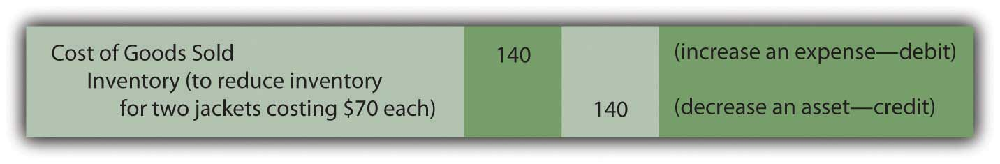
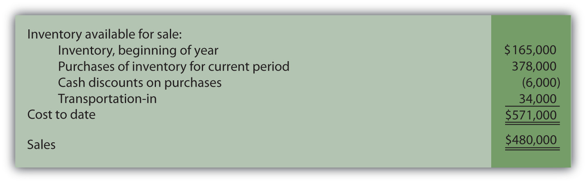

At the end of this section, students should be able to meet the following objectives:
Question: In a periodic inventory system, a physical count is always taken at or very near the end of the fiscal year. This procedure is essential. There is no alternative method for determining the final inventory figure and, hence, the cost of goods sold for the period. When a company uses a perpetual system, is a count of the goods on hand still needed since both the current inventory balance and cost of goods sold are maintained and available in the accounting records?
Answer: A physical inventory is necessary even if a company has invested the effort and cost to install a perpetual system. Goods can be lost, broken, or stolen. Errors can occur in the record keeping. Thus, a count is taken on a regular basis simply to ensure that the subsidiary and general ledger balances are kept in alignment with the actual items held. Unless differences become material, this physical inventory can take place at a convenient time rather than at the end of the year. For example, assume that a company sells snow ski apparel. If a perpetual system is in use, the merchandise could be inspected and counted by employees in May when quantities are low and damaged goods easier to spot.
An adjustment is necessary when the count does not agree with the perpetual inventory balance. To illustrate, assume that company records indicate that sixty-five ski jackets are currently in stock costing $70 apiece. The physical inventory finds that only sixty-three items are actually on hand. The inventory account must be reduced (credited) by $140 to mirror the shortfall (two missing units at $70 each).
The other half of the adjusting entry depends on the perceived cause of the shortage. For example, officials might have reason to believe that errors took place in the accounting process during the period. When merchandise is bought and sold, recording miscues do occur. Possibly two ski jackets were sold on a busy afternoon. The clerk got distracted and the cost of this merchandise was never reclassified to expense. This type of mistake means that the cost of goods sold figure is too low. The balance reported for these two jackets needs to be moved to the expense account to rectify the mistake.
Figure 8.9 Adjusting Entry—To Bring Perpetual Inventory Records in Line with Physical Count, a Recording Error Is Assumed
Conversely, if differences between actual and recorded inventory amounts occur because of damage, loss, or theft, the reported balance for cost of goods sold should not bear the cost of these items. They were not sold. Instead, a loss occurred.
If the assumption is made here that the two missing jackets were not sold but have been lost or stolen, the following alternative adjustment is appropriate.
Figure 8.10 Adjusting Entry—To Bring Perpetual Inventory Records in Line with Physical Count, Theft or Loss Is Assumed

In practice, when an inventory count is made and the results differ from the amount of recorded merchandise, the exact cause is often impossible to identify. Whether a loss is reported or a change is made in reporting cost of goods sold, the impact on net income is the same. The construction of the adjustment is often at the discretion of company officials. Normally, consistent application from year to year is the major objective.
Question: A periodic system is cheap and easy to operate. It does, though, present some practical problems. Assume that a company experiences a fire, flood, or other disaster and is attempting to gather evidence—for insurance or tax purposes—as to the amount of merchandise that was destroyed. How does the company support its claim? Or assume a company wants to produce interim financial statements for a single month or quarter (rather than a full year) without going to the cost and trouble of taking a complete physical inventory count. If the information is needed, how can a reasonable approximation of the inventory on hand be derived when a periodic system is in use?
Answer: One entire branch of accounting—known as “forensic accountingA branch of accounting specializing in investigating and reporting on situations where important information is limited or unavailable.”—specializes in investigations where information is limited or not available (or has even been purposely altered to be misleading). For example, assume that a hurricane floods a retail clothing store in Charleston, South Carolina. Only a portion of the merchandise costing $80,000 is salvaged.For a full description of forensic accounting, see Frank J. Grippo and J. W. (Ted) Ibex, “Introduction to Forensic Accounting,” The National Public Accountant, June 2003. In trying to determine the resulting loss, the amount of inventory in the building prior to the storm needs to be calculated. A forensic accountant might be hired, by either the owner of the store or the insurance company involved, to produce a reasonable estimate of the merchandise on hand at the time. Obviously, if the company had used a perpetual rather than a periodic system, the need to hire the services of an accounting expert would be less likely unless fraud was suspected.
In some cases, arriving at a probable inventory balance is not extremely complicated even if periodic inventory procedures are utilized. When historical trends can be determined with assurance, a valid estimation of the goods on hand is possible at any point in time without the benefit of perpetual records. For the Charleston store, assume that the general ledger is located after the disaster and the T-account balances provide the following information resulting from the periodic system in use:
Figure 8.11 Estimating Inventory—General Ledger Balances
If no sales had taken place, the inventory on hand would have cost $571,000 as shown by the ledger accounts. Sales did occur prior to the hurricane and a significant amount of merchandise was removed by the customers. However, the $480,000 balance shown in the sales T-account does not reflect the cost of the inventory items that were surrendered. It is a retail amount, the summation of the price charged for all the merchandise sold during the year to date.
To determine the cost of inventory held at the time of the catastrophe, cost of goods sold for the current year has to be approximated and then removed from the $571,000 total. Many companies use a fairly standard markup percentage in setting retail prices. By looking at previously reported balances, the accountant is often able to make a reasonable determination of that markup. For example, assume that in the preceding year, this company reported sales revenue of $500,000 along with cost of goods sold of $300,000 and, hence, gross profit of $200,000. In this earlier period, cost of goods sold was 60 percent of sales revenue ($300,000/$500,000) while gross profit was 40 percent ($200,000/$500,000).
If available evidence does not indicate any significant changes this year in the method used to set retail prices, the accountant can assume that cost of goods sold during the period prior to the storm was about $288,000 ($480,000 sales revenue × 60 percent). Because the cost of all available inventory was $571,000, approximately $283,000 of those goods were still in stock when the hurricane hit Charleston ($571,000 total cost less $288,000 estimated cost of goods sold). This residual figure can then serve as the basis for the insurance or tax claim. Only goods costing $80,000 were saved. Thus, the estimated loss was $203,000 ($283,000 less $80,000).
The biggest obstacle in this type calculation is the validity of the cost and markup percentages. Many companies offer an eclectic variety of products, each with its own specific gross profit. Other companies change their markups frequently based on market conditions. In such cases, determining a reliable percentage can be difficult and the accuracy of the resulting estimation is more questionable.
Link to multiple-choice question for practice purposes: http://www.quia.com/quiz/2092901.html
Although perpetual inventory systems are designed to maintain current account balances, a physical count is still required periodically to update the records for errors, theft, and the like. In addition, knowledge of the amount of inventory on hand is sometimes needed in a periodic system even if complete records are not available. If a loss has occurred due to some type of disaster or if interim financial statements are to be prepared, the inventory balance can be estimated. This computation is based on determining the gross profit percentage using historical data. Cost of goods sold for the period is estimated and then removed from the total inventory available for sale.
Following is a continuation of our interview with Kevin G. Burns.
Question: Gross profit is the sales revenue generated by a company less cost of goods sold. In other words, it is the markup that a company is able to earn from the sale of its inventory. Goods are bought for a price and then sold at a higher value. In analyzing companies, gross profit is often stated as a percentage. A company’s gross profit, for example, might be 37 percent of its sales. When you study a company, how much attention do you pay to changes in gross profit from year to year or differences that exist between one company and another?
Kevin Burns: Actually year to year differences only interest me if there is a significant change. If a company’s gross profit margin increases significantly from one year to the next, my radar is activated. I want to know exactly why that happened. Is it temporary or something significant? If gross profit is that volatile, it could also easily go the other direction in the future. I prefer steady as she goes. Predictability and transparency are very important to me. As for gross profit margins between one company and another, the only way that is significant to me is if they are in the same industry and then only if there are big differences. Most companies in mature industries have similar margins and large differences, again, would make me very suspicious.
Joe talks about the five most important points in Chapter 8 "How Does a Company Gather Information about Its Inventory?".